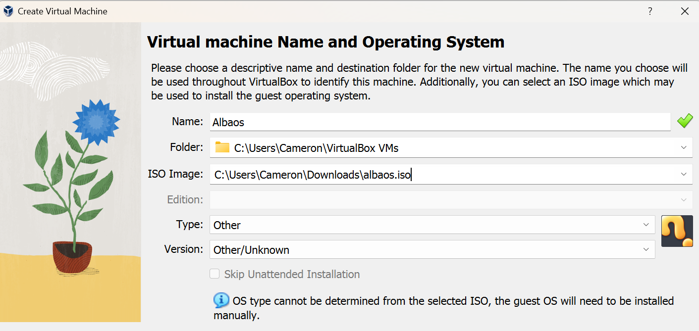
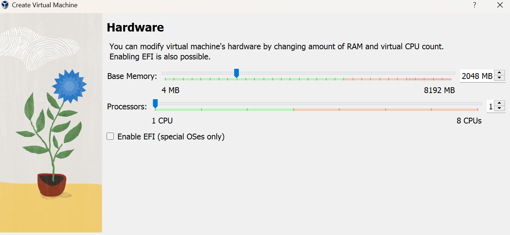
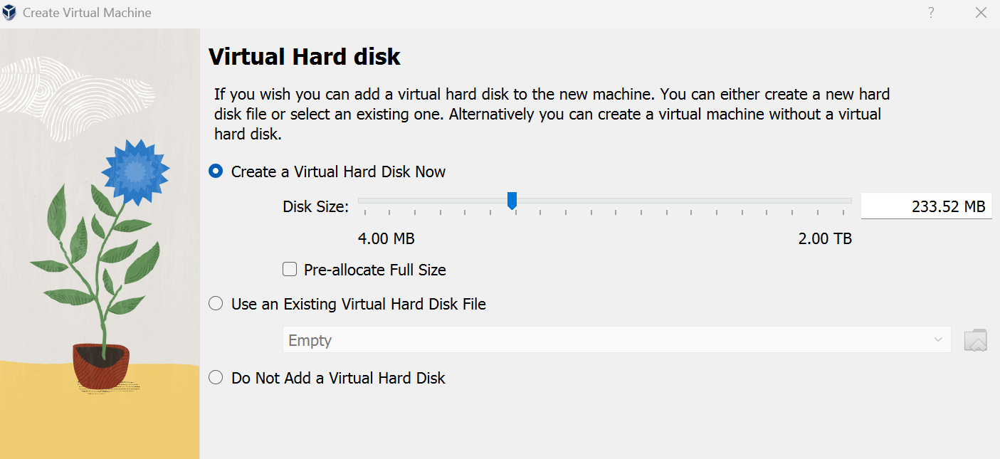

<!DOCTYPE html>
<html lang="en">
<head>
    <meta charset="UTF-8">
    <meta name="viewport" content="width=device-width, initial-scale=1.0">
    <link href="//maxcdn.bootstrapcdn.com/bootstrap/3.3.0/css/bootstrap.min.css" rel="stylesheet" id="bootstrap-css">
    <script src="//maxcdn.bootstrapcdn.com/bootstrap/3.3.0/js/bootstrap.min.js"></script>
    <script src="//code.jquery.com/jquery-1.11.1.min.js"></script>
    <link href="//netdna.bootstrapcdn.com/font-awesome/3.2.1/css/font-awesome.css" rel="stylesheet">
    <link rel="stylesheet" href="./css/sidebar.css"> 
    <title>AlbaOS Docs | AlbaSoftware</title>
</head>
<body>
    
</body>
</html>


<div class="container">
	<div class="row">
		<a href="index.html"><h2>AlbaOs</h2></a>
		<hr/>
		 <div id="wrapper">
        <div id="sidebar-wrapper">
            <ul class="sidebar-nav" style="margin-left:0;">
                <li>
                    <a href="albaosdocs.html"><i class="fa fa-info-circle " aria-hidden="true"> </i> <span style="margin-left:10px;">Get Started</span>  </a>
                </li>
                <li>
                    <a href="albaosdocs-compile.html"><i class="fa fa-info-circle " aria-hidden="true"> </i> <span style="margin-left:10px;">Compile Kernel</span>  </a>
                </li>
            </ul>
        </div>
                   
        <div id="page-content-wrapper">
            <div class="container-fluid">
                <div class="row">


                    
                    <div class="col-lg-12">
                        <h1>Getting Started</h1>
                    </div>
                    <p>Note: If you see an issue not noted in these docs, you can open an issue on <a href="https://github.com/CamH04/AlbaOS">Github</a></p>
                    <br>
                    <br>
                    <br>
                    <section class="VM-START">
                        <h3>Get Up And Running On A Virtual Machine!</h3>
                        <ol>
                            <li>Download a virual machine software, i recommend <a href="https://www.virtualbox.org/wiki/Downloads">VirtualBox</a> or <a href="https://www.qemu.org/">Qemu</a></li>
                            <li>Download The Iso File for AlbaOS from <a href="https://github.com/CamH04/AlbaOS">Github</a></li>
                            <li>Configure virtual machine with albaos.iso as the boot drive</li>
                            
                            <p>If any issues occur on startup with a triple fault: removing the network card in the virtual machine's settings should fix it</p>
                            <li>Allocate the reccomended amount of cores and memory based on your computer specs, this os wont need much though</li>
                            
                            <li>Create Virtual hard disk</li>
                            
                            <li>Finish Up</li>
                            <li>Launch virtual machine!</li>
                        </ol>
                    </section>
                

                </div>
            </div>
        </div>          
	</div>
</div>
